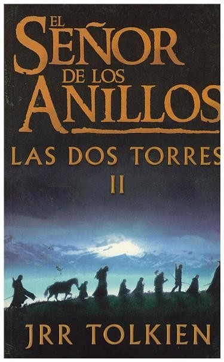

 EL SEÑOR DE LOS ANILLOS: LAS DOS TORRES J.R.R. TOLKIEN BREVE DESCRIPCIÓN Las dos torres es el segundo volumen de la novela de fantasía heroica El Señor de los Anillos, del escritor británico J. R. R. Tolkien. VALORACIÓN MEDIA Los usuarios han votado a este libro con una nota de 4.8
EL SEÑOR DE LOS ANILLOS: EL RETORNO DEL REY J.R.R. TOLKIEN BREVE DESCRIPCIÓN El retorno del Rey es el tercer volumen de la novela de fantasía heroica El Señor de los Anillos, del escritor británico J. R. R. Tolkien. VALORACIÓN MEDIA Los usuarios han votado a este libro con una nota de 5.0